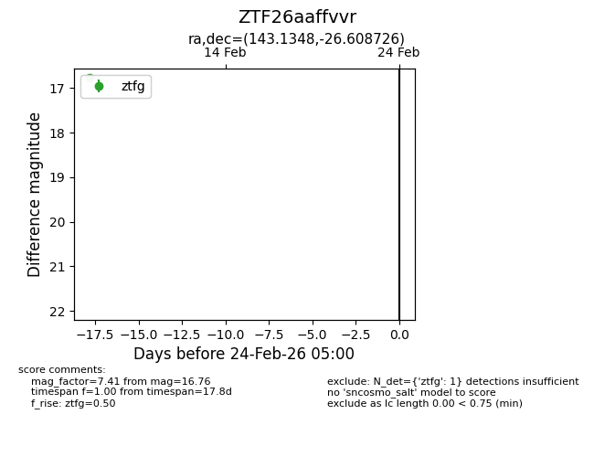
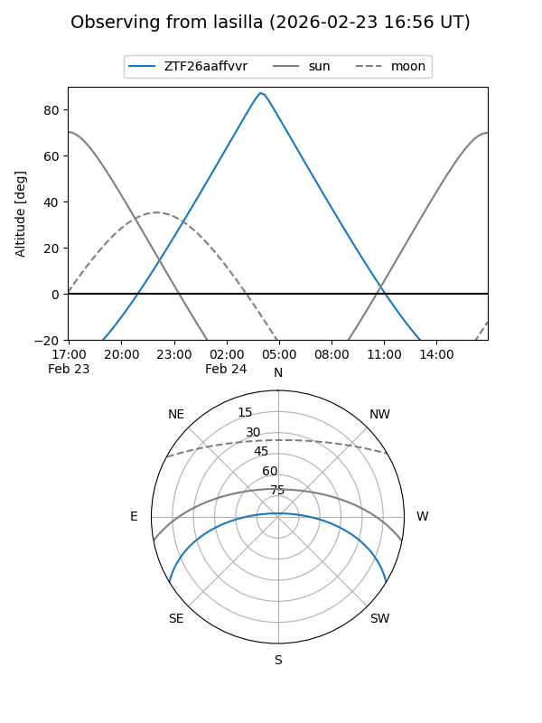
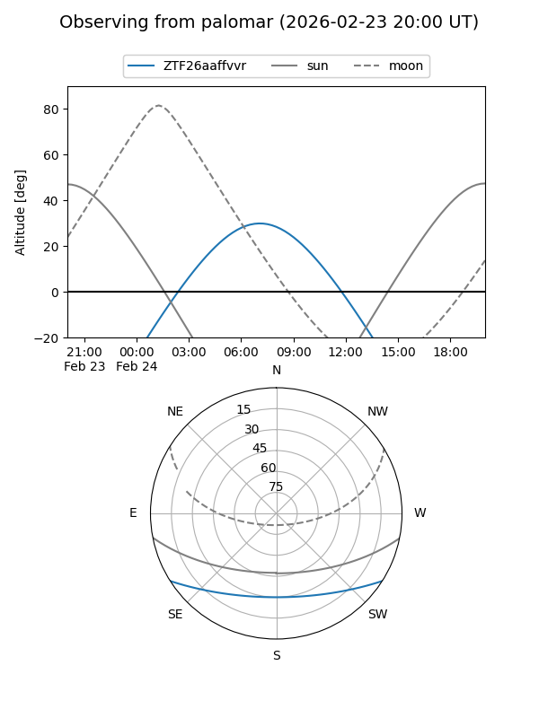

ZTF26aaffvvr
Target ZTF26aaffvvr at 2026-02-24 09:08
Aliases and brokers:
FINK: link
Lasair: link
ALeRCE: link
alt names
ZTF26aaffvvr (ztf,fink_ztf)
Coordinates:
equatorial (ra, dec) = 143.1348,-26.60873
equatorial (HMS+DMS) = 09:32:32.34,-26:36:31.41
galactic (l, b) = (257.0811,+18.06962)
Flags:
Photometry:
last ztfg=16.76
1 ztfg detections
Lightcurve

Visibility


Additional plots